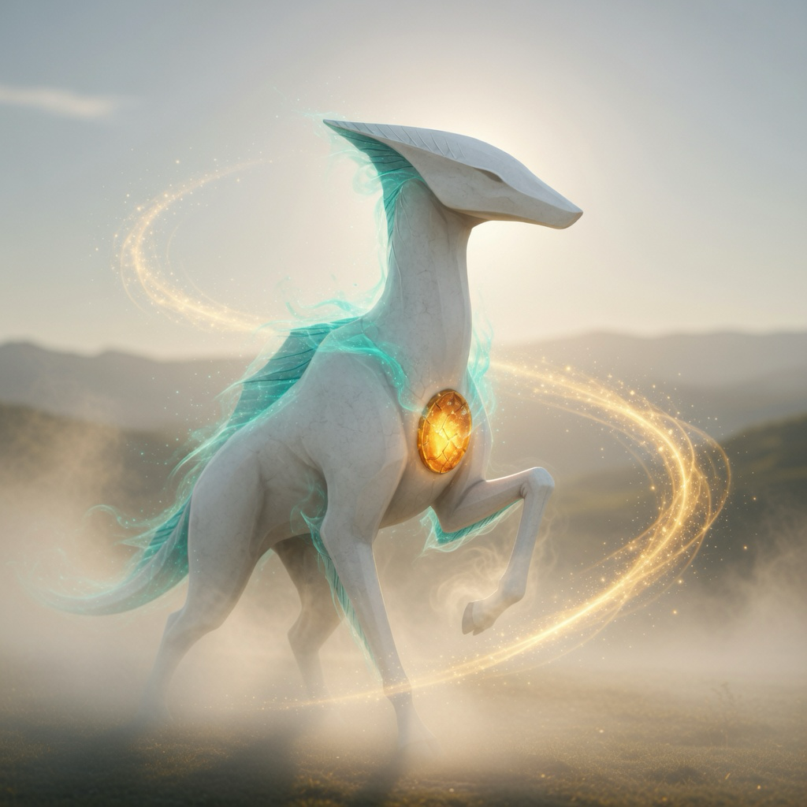

Audio-first adaptive walking
Waykin
You move. Lira moves with you. The world responds. Bond grows.
Active development · iOS reference app · Snap Spectacles target

What it is
Waykin is an audio-first walking companion for iPhone, with a standalone Snap Spectacles Lens approved as a second target. You move; a companion moves with you; the world and the bond respond.
Built for presence on the path — not another map-and-metric fitness tracker.
In short
Home → Begin Walk (real) or Demo Walk → Active Session → Session Summary → Memory. Demo Mode runs the same deterministic loop without physical movement or location permission.
Walking, Lira runtime, Bond progression, semantic audio cues, and local session memories are implemented and package-tested. Device audio acceptance remains direct evidence, not assumed.
The iOS app stays the reference implementation. The Spectacles Lens is in progress and still needs work in the Lens Studio editor.
Built with
- Swift and SwiftUIthe iPhone app and its screens
- ARKit and RealityKitAR companion view inside the audio-first iPhone app; a device evidence pass is still pending
- Core Location and MapKitreal walks and the session map
- AVFoundationplays the companion's audio cues
- SwiftDatakeeps memories and Bond on the phone
- HealthKitoptional, read-only step context
- TypeScript and Lens Studiothe Snap Spectacles Lens in progress
Changelog
Milestones in plain English, newest first, to Nov 7, 2026
- Snap Spectacles approved as a second target; the iPhone app stays the reference version.
- Waykin's core ported to TypeScript for the Lens, with automatic checks that it matches the iPhone.
- Added a release-grade privacy policy and documented rights for all of the app's own audio.
- First walking loop on iPhone: begin a walk or demo walk, then see a summary and memory.
- Walks gained an AR companion view, path progress and optional HealthKit step context. AR continuity on a real device is still an evidence pass.
- Added a full session map with your walked path, plus first-run onboarding.
- A packaged companion can be placed in AR in the build, with a fallback if loading fails. That is not a finished device-evidence claim.
Roadmap
What comes next. Plans, not promises, and no dates.
- In progressRun a device evidence pass covering real walks, outdoor audio, AR continuity and HealthKit.
- In progressFinish the Snap Spectacles Lens, starting with a demo walk that runs in Lens Studio's preview.
- PlannedTune audio loudness and Lira's presentation using evidence from real outdoor walks.